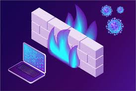

| Notion | Définition | Image |
| Pare-feu | Un pare-feu est un système de sécurité de réseau informatique qui limite le trafic Internet entrant, sortant ou à l'intérieur d'un réseau privé. |  |
| Adresse IP | Une adresse IP (Internet Protocol) est un numéro d'identification unique attribué de façon permanente ou provisoire à chaque périphérique faisant partie d'un même réseau informatique utilisant l'Internet Protocol. |  |
| Serveur | Un serveur informatique offre des services accessibles via un réseau. Il peut être matériel ou logiciel, c'est un ordinateur qui exécute des opérations suivant les requêtes effectuées par un autre ordinateur. | |